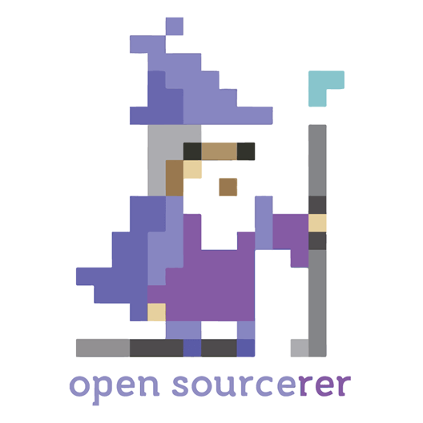
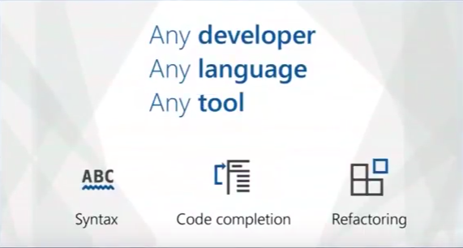
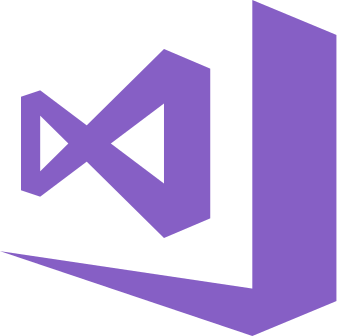
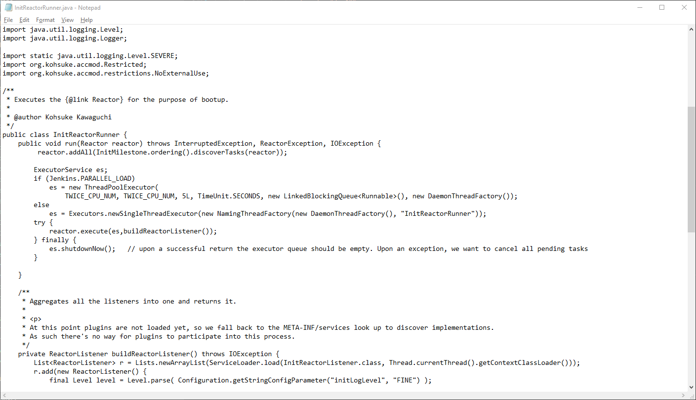
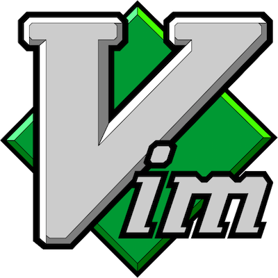
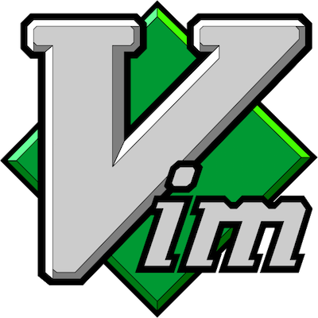

If I can make
a Language Server
...you can too!
|  |
| David Driscoll |
| Open Sourcerer / Software Developer |

|
| https://daviddot.net |
|
david_dotnet
|
|
david-driscoll
|
What is the
Language Server Protocol?

Why?


What if...
?
Notepad is not fun :(
Example (OmniSharp)
Example (TypeScript)
window.location;
What Editors can I use?

 

Language Support
- C#
- C++
- HTML
- CSS/LESS/SCSS
- Json
- PHP
- Java
- SQL
- Go
- Rust
- Scala
- TypeScript
- JavaScript
- Docker
- Lua
- Ruby
- Elixir
- Groovy
Writing a Language Server
- https://microsoft.github.io/language-server-protocol/specification
- Protocol defines operations
- Server and Client negotiate capabilities
- Json RPC
- Bi-directional communication
- Transports
- Stdio
- WebSocket
- Socket
SDKs
- NodeJS
- TypeScript
- JavaScript
- Java
- C#
Supports features like...
- Goto Definition
- Rename Symbol
- Workspace Symbols
- Logging
- Diagnostics / Errors
- Intellisense
- Signature Help
- Hover
- Document Symbols
- Formatting
- Code Lens
- Code Actions
Creating a language server?
- Custom Templating Language!
- Configuration files!
- Support a custom Scripting Language!
- Translation!